4 Exercise 3: Visualizing and classifying geographic data sets
4.1 Exercise content
This exercise familiarizes you with visualization techniques for vector and raster data.
4.2 The goal of the exercise
After this exercise you know how to use basic visualization tools for different data sets.
4.3 Preparations
Open a new QGIS project (Project > New) and save it as “QGIS-exercise 3”. Add the following data to the project:
- ..course_directory/harvard_map_collection/berlin_1920.tif
- ..course_directory/geofabrik/berlin_placenames.shp
- ..course_directory/geofabrik/berlin_roads.shp
- ..course_directory/geofabrik/berlin_water.shp
4.4 Visualizing vector data
Take a look at all the vector data sets that are currently open in your project. You will notice that on the left side of each layer there is a shape that describes its vector type. berlin_placenames is a point data set, berlin_roads is a line data set and berlin_water is a polygon data set.
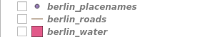
4.5 Visualizing line data sets
In the Layers Panel, set the berlin_roads layer visible and hide all other layers. Right click the berlin_roads_layer in the same panel. Navigate to the layer’s Properties and select the Symbology tab like we did with the raster data set earlier. Note that the properties of a vector layer are more complex than those of a raster layer. The Symbology tab is completely different as well.
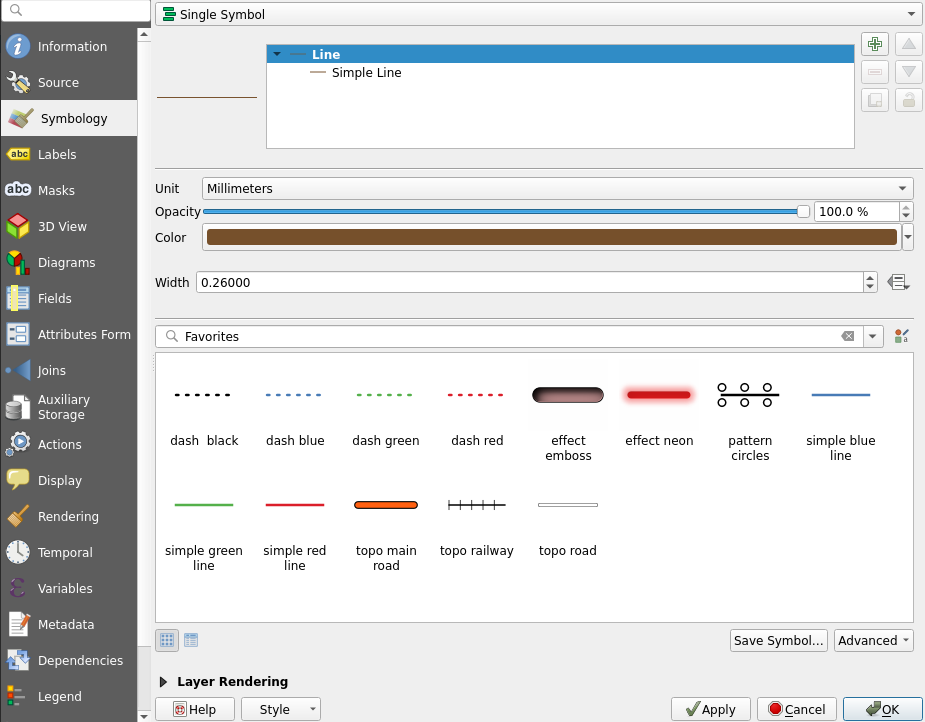
Specify the width and color of the berlin_roads layerand press Apply to update the map view with your changes. Now, select a line style library, Favorites for example, and change the line style to one of the options. Once done, press OK to close the window and view berlin_roads visualized with your symbology settings.
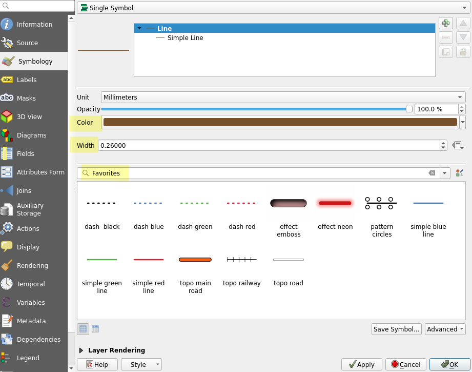
The visualization of other geographic data sets follows the same pattern: Right clicking the layer, selecting Properties… and then the Symbology tab. Different types of vector layers (points, lines, polygons) have different symbology properties. Although the appearance of the symbology tab is quite similar when working with vector data, you cannot style a line layer with the exactly same symbology settings you used for a point layer, for example.
4.6 Visualizing point data sets
Let’s visualize point data next. Set the berlin_placenames and berlin_roads layers visible and keep other layers hidden. The placenames layer has Berlin’s place names as points (data from OpenStreetMap / Geofabrik). Open the layer’s Symbology tab just like before and notice the differences between the properties of line and point layers. Select a new Color and Size for the symboland press Apply. Change the symbol itself as well and try how rotation affects the appearance of the symbols.
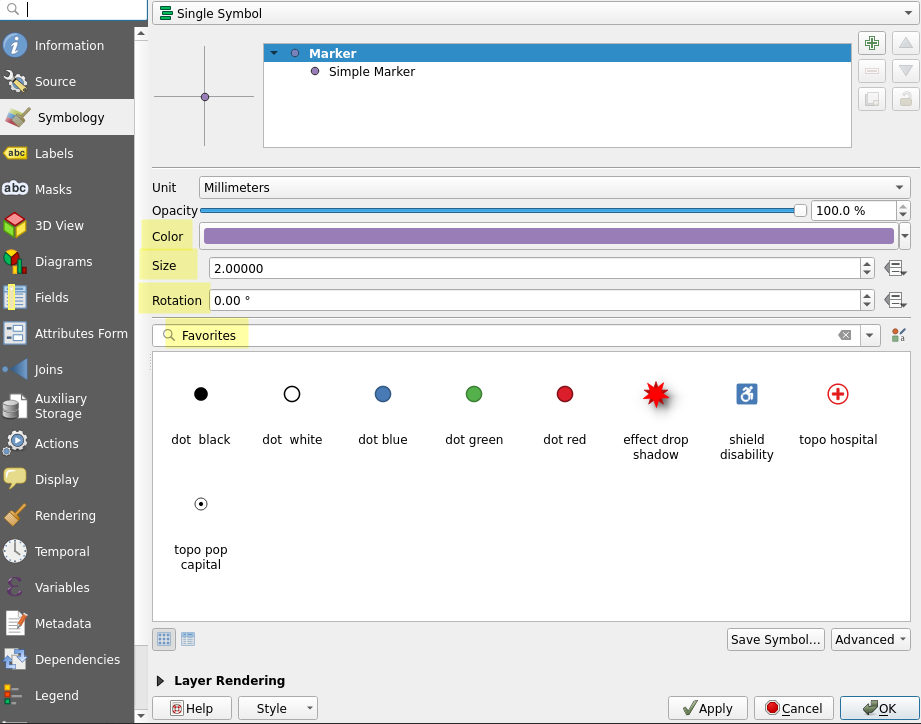
Your point and line data sets together could look something like this, for example:
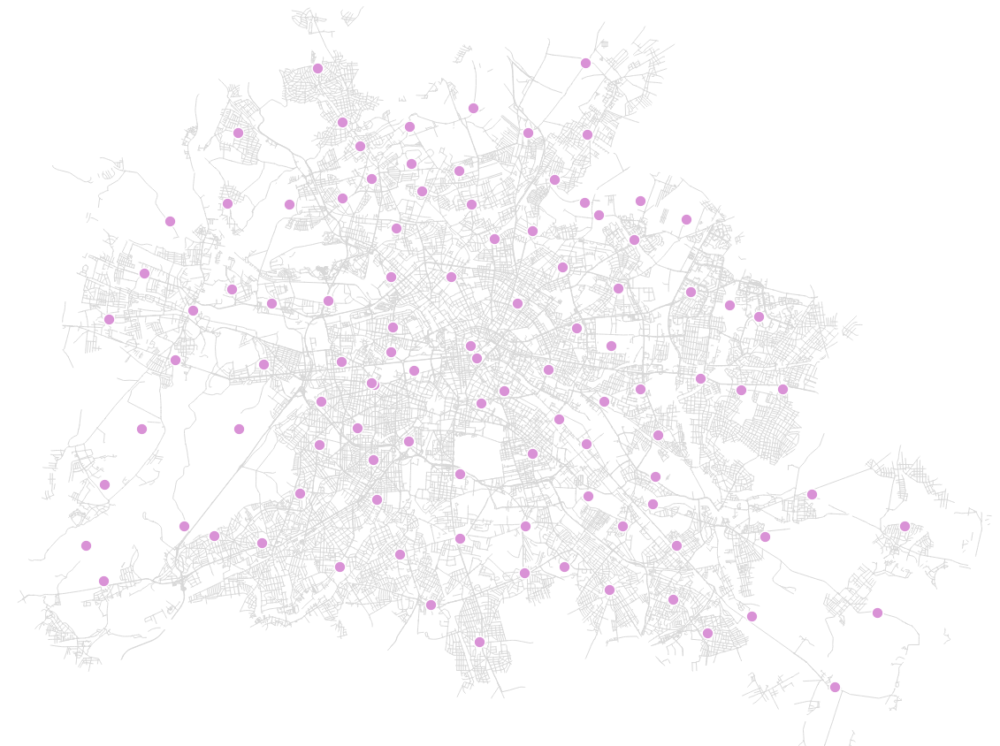
4.7 Visualizing polygon data sets
Let’s move on to polygons. Set the berlin_water layer visible together with the berlin_roads and berlin_placenames layers and hide all other layers. Open the symbology tab of the berlin_water layer and note the differences to the properties of the previous point and line data sets. Experiment with colors and selecta different symbol for the layer. Feel free to try different opacity values as well. Once you have tinkered enough, press OK.
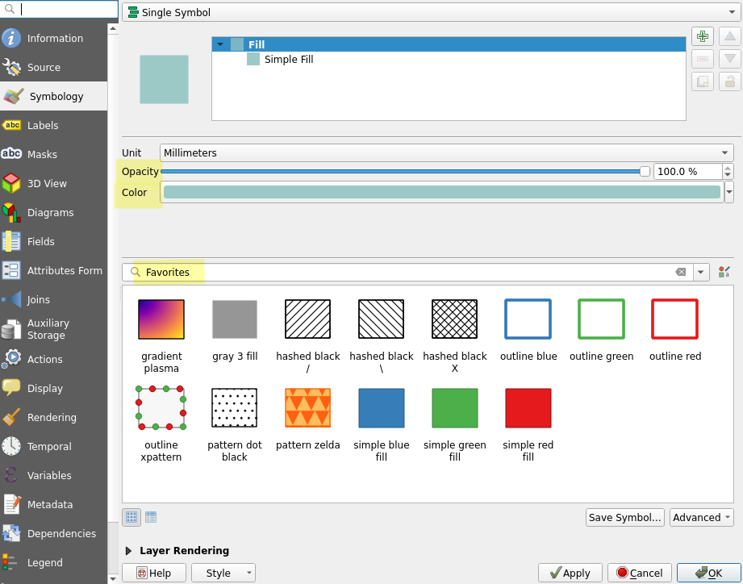
It is possible that your layers overlap in such a way that for example some of your points are left invisible underneath the water polygons. You can fix this by editing the layer order: simply drag the layers into your desired order in the Layers Panel. It is often best to leave polygon data sets at the bottom. Same goes for raster data. Your rearranged vector layers should look something like this:
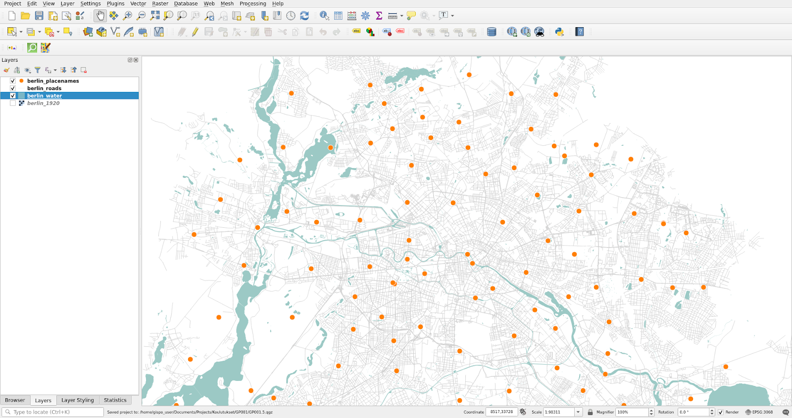
4.8 Changing symbols
Next we will change the symbols of the polygons. Open the properties of the berlin_water layer again and from the Symbology tab select the Simple Fill line:
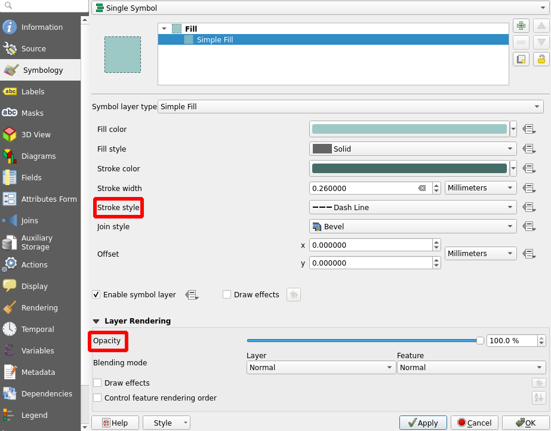
Now set Stroke style to Dash Line. You can also set the Stroke width to your liking. Finally, set the Opacity to 70%(From the Layer Rendering settings).
4.9 Scale dependent symbols
Next we will set a scale limit for the berlin_placenames layer. Select the layer’s Properties > Rendering and check the box Scale Dependent Visibility. Then set the Minimum to 1:200 000. With this setting the place name layer is visible only when the scale is larger than 1:200 000.
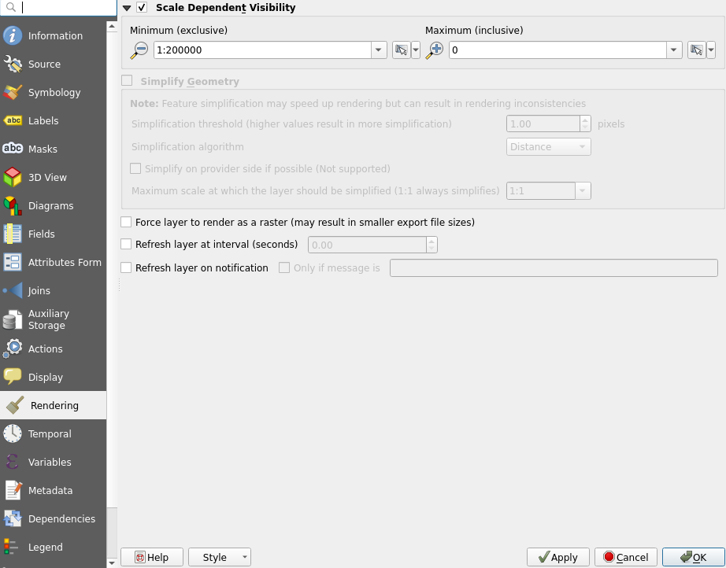
Enable your changes by pressing either Apply or OK. The latter closes the Properties window in addition to enabling your changes. Now try zooming the map view and see how the layer vanishes once you zoom out far enough. You can change the scale of the map either by scrolling with the mouse or by typing the desired scale into the scale section of the Status Bar at the bottom of the screen.
4.10 Visualizing raster data
Let’s start with the berlin_1920 data set. This raster data is a digitized historical map of Berlin, originally from the year 1920 (digital version published by the Harvard Map Collection, data openly available at: https://maps.princeton.edu/catalog/harvard-g6299-b3-1920-k5). The map provides an overview of the city and includes the most important natural and urban elements of the area. The appearance of the map is faithful to old paper maps. To view the layer clearly, hide all other layers in the Layers Panel.
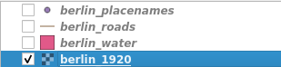
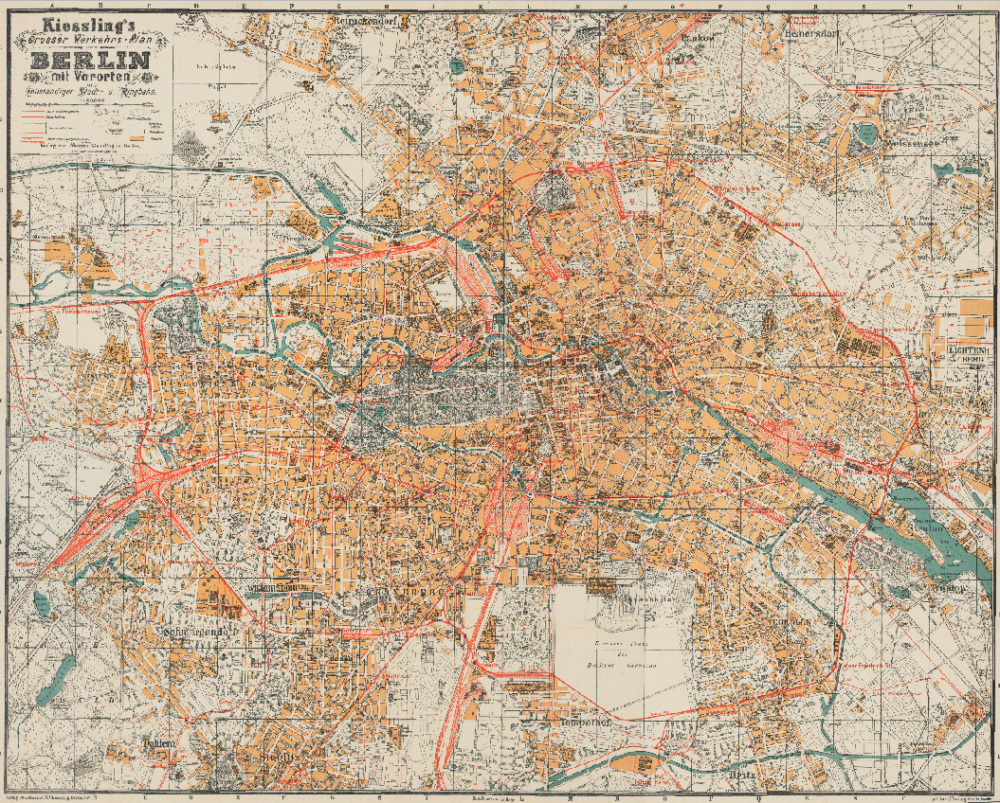
Psst! Check the coordinate reference system (CRS) from the bottom right of the screen! The CRS of the project should be EPSG:3068. All data in this exercise is already in EPSG:3068, so QGIS has most likely automatically set the correct project CRS.
Right click the berlin_1920 layer in the Layers panel and select the Symbology tab. This tab consists of options that affect the appearance of the selected layer. You can also integrate this panel directly into your QGIS workspace by selecting View > Panels > Layer Styling Panel or clicking the paint brush symbol 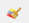 in Layers panel.
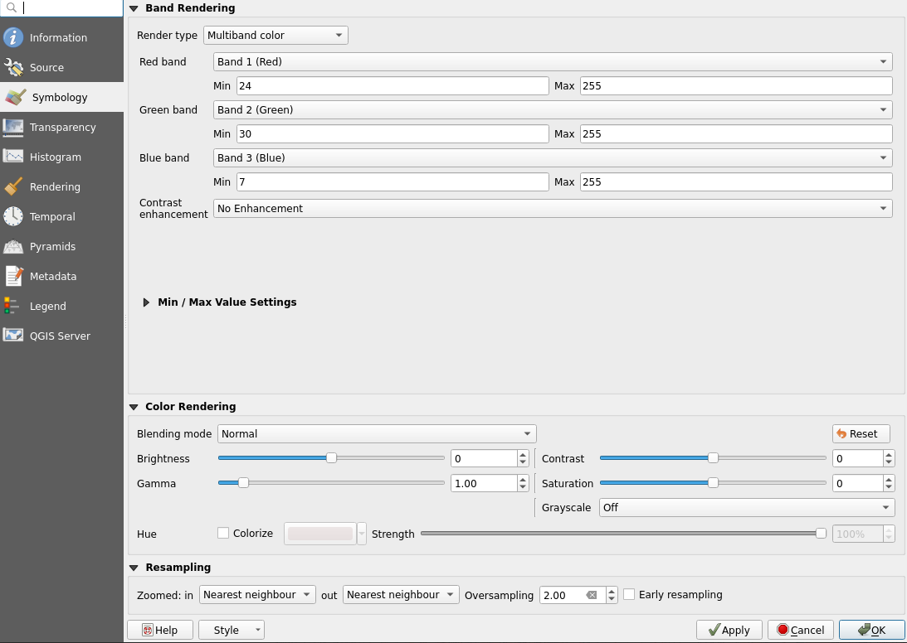
In the Band Rendering section you can select between different Render types. The default should be set at Multibrand color. This render type uses the three bands of visible light (R = red, G = green, B = blue, RGB) to visualize the raster image. Editing the color values or bands affects how the pixels of the raster image are drawn onto the screen. This particular set of raster data (berlin_1920) has been configured in a way that it looks the best when the bands are set as follows: Red Band = Band 1, Green Band = Band 2 and Blue Band = Band 3. It is important to grasp the underlying logic to visualizing raster data.
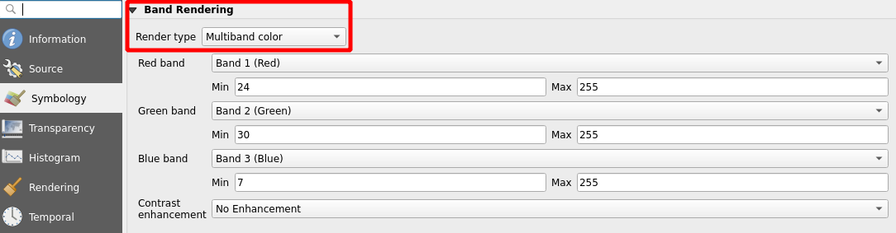
Now try switching the order of the channels. Pressing Apply shows your changes in the map view but leaves the menu open - this way you won’t have to close the menu every time you want to check out your results. Once you have experimented enough, click OK.